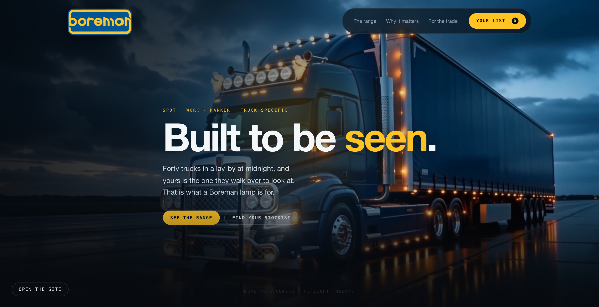
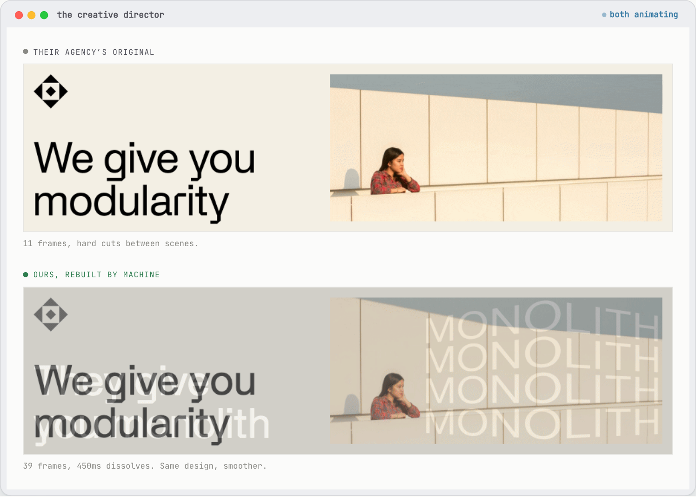
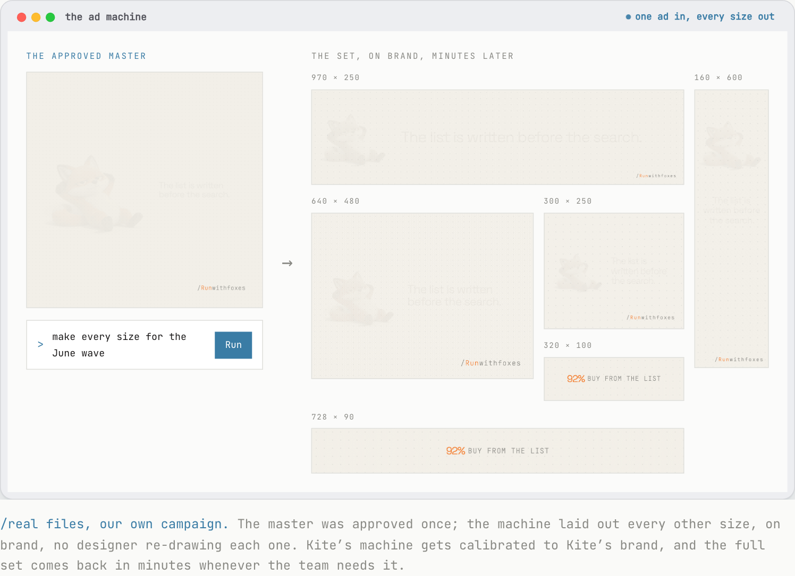
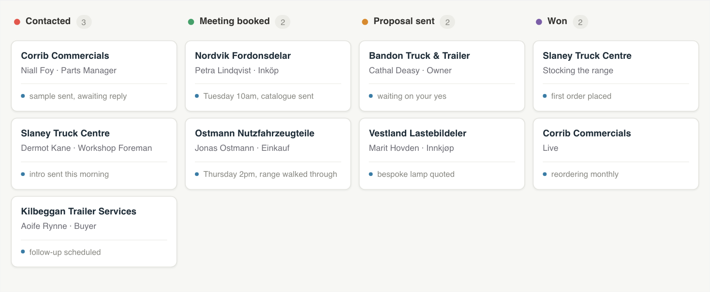
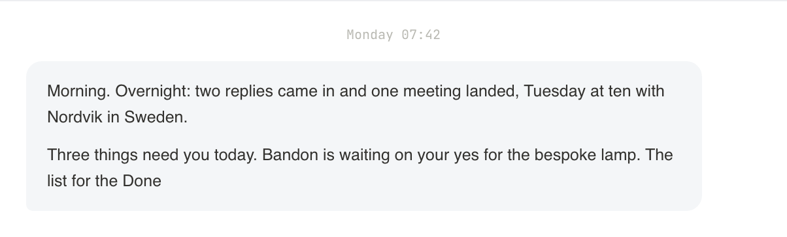
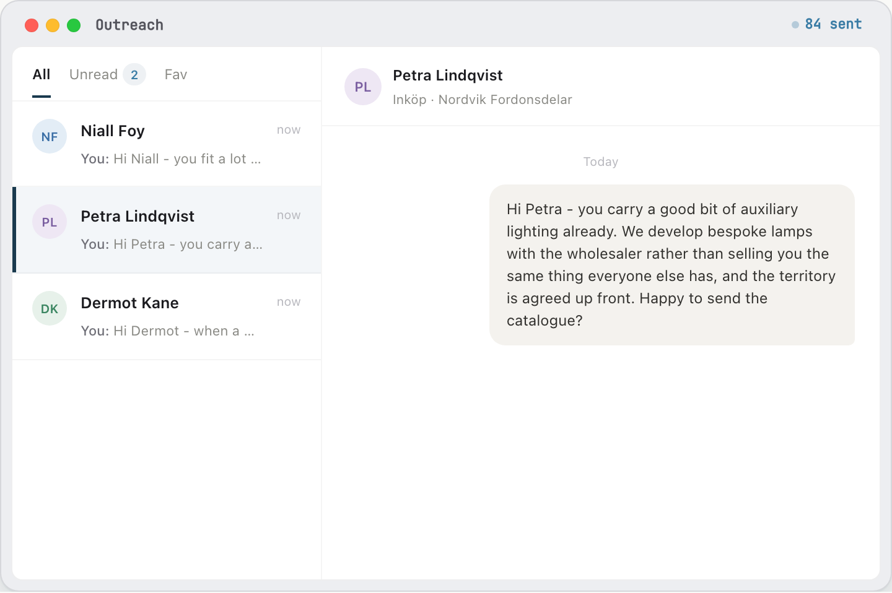

/Runwithfoxes
You said on our call that the pictures are what sell a lamp, that the competitors are promoting theirs heavily and in cool ways, and that the manpower is there but the know-how is not. Everything below is our own work or a demonstration we made. The one exception is the page at the top, which is your own site rebuilt.

boremanltd.com, rebuilt. On the page this is a live site you can open and click through, not a picture of one.
Before I build anything, I ask one question: what does really good look like here? Not what AI can do, but what the best version of this marketing would be, and the level of quality and effectiveness I would want to stand over.
So I start where I always have. If there were no AI at all, what team would I hire to do this properly? I map that team first, the one I would build in a world before any of this existed.
Then I build exactly that, with agents instead of hires. The quality bar is set by the team I would have wanted, not by whatever a tool happens to make easy. Twenty years in brand is what tells me where that bar sits: Head of Brand at O2 Ireland, then CMO at the National Lottery, Head of Brand at Indeed and Miro, both global roles. Positioning, messaging and tone written first, then built into everything the agents make.
Ireland’s Marketer of the Year, 2022 · Who I work with: Moloco, Heineken, Norcros, Alltech, Smurfit, Hostelworld, Eaton Square, Weatherbys
“His command of marketing science as well as his instincts for great thinking and ideas are, in my opinion, superb.”
Peter Field, The Godfather of Effectiveness, author of The Long and the Short of It
“Paul reported into me as Head of Brand when I was at Indeed. I have learned more from him than anyone else in my career.”
Paul D’Arcy, CMO, Moloco. Former CMO at Miro and Indeed
I firmly believe that marketing structures, marketing teams and marketing roles are going to change dramatically in the next few years, and the work we do is all around that. We train teams. We build AI agents and capabilities for them, or with them. We work with marketing leaders to re-imagine what future workflows could look like, and we design AI adoption programmes for them.
Three of them, and we would build all three for Boreman. They can be taken in any order, or together.
If you asked us where to start, we would say the Advertising Agent and the website first, because the pictures and the page are what a driver and a dealer actually see, and there is no point sending people somewhere that cannot take them anywhere. The Growth Agent is the one that then brings them.
You told us cosmetics are very important, how they look on the truck, and that light output matters less. In a category where the picture is the product, the people making the best pictures win, and you said yourself that the competitors are promoted very heavily and in cool ways.
We take your existing lamp photographs and your brand apart, and teach the machine your rules: your blue and your amber, how a lamp is lit and laid out, where the logo sits, how the writing sounds. That calibration is the once-off part and it is where the craft is. After it, the person in your office sends up a product shot and says what she needs, and finished work comes back looking like Boreman.
One approved piece becomes every size you need, for a truck show banner, a dealer’s website, a magazine, or a month of posts for TikTok, Instagram and Facebook aimed at the drivers rather than at the trade.

Real work, not a mock-up. An agency’s original above, the same design rebuilt by the machine below, both animating on the page. This one is Sabre’s, shown with their name because we build and run these machines for them.

One approved master on the left, every other size laid out on the right, on brand, with no designer re-drawing each one. These are our own files from our own campaign.
The page at the top of this document is boremanltd.com, rebuilt. It is a real page, not a picture of one. The page itself is seventeen times lighter than the site you have now.
After it is built you change it by talking to it. Ten new photographs on a product page, a new lamp added to the range, a banner for a show next month. You ask, and it makes the change.
One thing worth saying plainly. We built that on spec, from your public website and nothing else. Nobody briefed us, so we made our own guesses about what matters to you, who you are really talking to, and what a dealer needs from a page. With a proper brief and an hour of your time on those questions, we would do a considerably better job than this.
You told us you find truck drivers by hand, off the Facebook pages of the big truck shows and off LinkedIn, and you called it stupid and time consuming. A Growth Agent is the thing that does that part. It finds the people, works out who is worth talking to, writes to them, and tells you what came back.

The board. It is the single point of contact for the pipeline, kept up to date without anyone typing into a spreadsheet.

On the page this note writes itself out in front of you, the way it would land every morning.
The main job is the outreach. It builds the list, finds the right person at each dealer, wholesaler or workshop, writes each message to that company rather than sending the same one to everybody, sends it, and reads the replies. Your rep in Ireland and Jeff in the UK stop Googling and start the week with people who have already put their hand up.

Every firm and person in these windows is invented. The machinery is real and running, a Boreman version would be built to your world and your rules, and nothing in it sends until someone at Boreman says go.
The same four things are true of all three, so they are worth saying once.
The person in your office who runs the social goes to a private page on our site with a password on it. She asks for what she needs in plain English, a post for the new spotlight or a banner for a show, and the finished files come back to her. There is nothing to install and nobody to train, which matters because you told us training people in house would not work for you.
The work is ours, not yours. You send over your existing ads, your lamp photography and whatever brand material you have, and we take it apart and teach the machine your rules. That is the calibration, it happens once, and it is the part that decides whether everything afterwards looks like Boreman or looks like nothing in particular.
It runs on our account, behind our page. There is nothing for Boreman to buy, install or maintain, and no software for anyone to learn.
If you would rather run it yourselves at any point, we hand it over. You would run it in your own Claude account and the monthly stops. The Growth Agent is the natural next one, once the pictures and the site are doing their job.
Advertising Agent
€3,000 plus VAT
Then €99 a month, reviewed together after three months.
Website Agent
€6,000 plus VAT
No monthly on the website.
Growth Agent
€3,000 plus VAT
Then €99 a month, reviewed together after three months. Nothing sends until someone at Boreman says go.
What the price covers
What it doesn’t
If you would rather run it yourselves at any point, we will hand it over. You would run it in your own Claude account and the monthly stops.
Starting with the big companies, and with the one I did from the inside, running the teams rather than advising them.
Moloco
50 to 60 marketers
They wanted to hire a copywriter. I persuaded them to let me build copywriters in AI instead, and they use them all the time. I am also building them a brand guardian, and an AI identity generator, which takes all the elements of their brand identity and reproduces them at speed.
Miro
150 marketers
We were spending about $1.2 million on design and studio work. When I realised what was possible I set a target to reduce it by 20%, and we took $240,000 out inside a year.
Sabre
AI adoption programme, marketing first
I have built them writers, brand guardians, a search agent, a brief coach, and an advertising creative role. The creative work shown further up this page is Sabre’s, shown with their name because we build and run these machines for them.
A few things worth keeping, picked for where you are now.